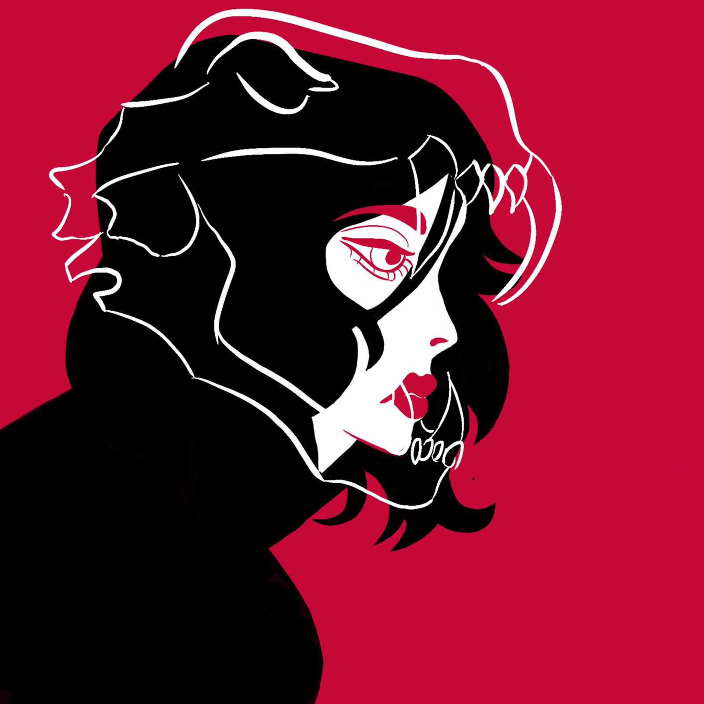
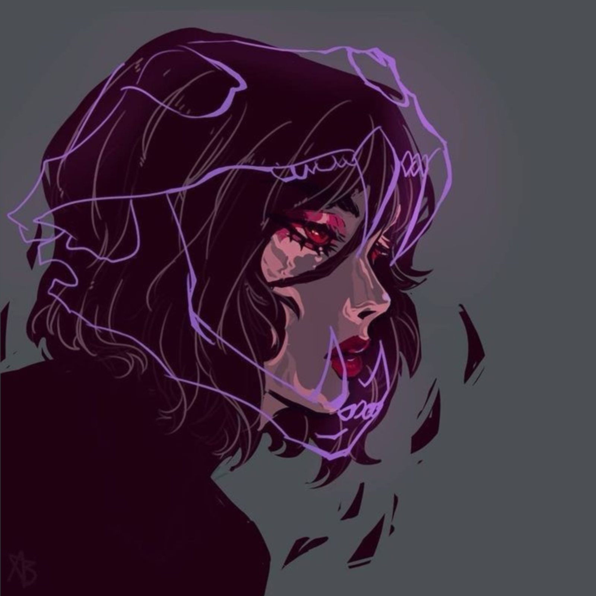
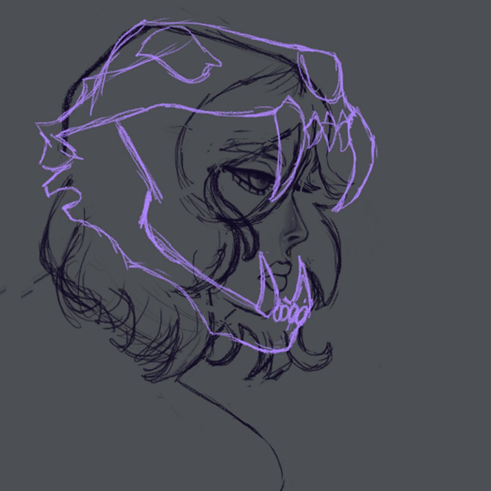

PROJECT 3

5 Styles
STATEMENT
A class exercise in stylistic range. One reference photo, five distinct interpretations: geometric, line and blobs, black and white, silhouette and childish. The subject was chosen freely.
Each variation asks the same image to speak a different visual language, from the structural logic of geometry to the looseness of organic line. The exercise as a whole is an argument of adaptability.
Reference & Base Sketch


FINAL ILLUSTRATIONS